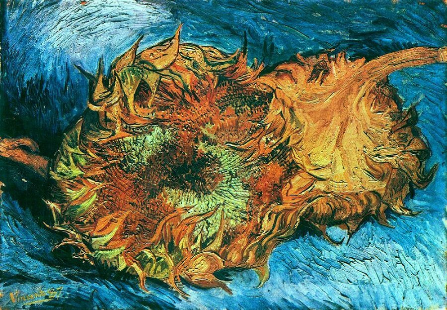
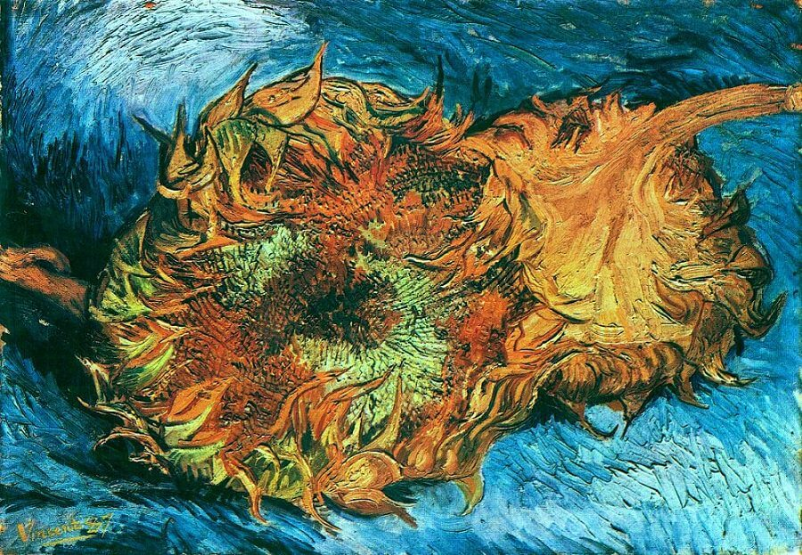

Vincent Van Gogh
A self-portrait of the post-impressionist painter.
Born into an upper-middle-class family, Van Gogh drew as a child and was serious, quiet, and thoughtful. As a young man, he worked as an art dealer, often traveling, but became depressed after he was transferred to London. He turned to religion and spent time as a Protestant missionary in southern Belgium. He drifted in ill health and solitude before taking up painting in 1881, having moved back home with his parents. His younger brother Theo supported him financially, and the two kept a long correspondence by letter. His early works, mostly still lifes and depictions of peasant labourers, contain few signs of the vivid colour that distinguished his later work. In 1886, he moved to Paris, where he met members of the avant-garde, including Émile Bernard and Paul Gauguin, who were reacting against the Impressionist sensibility. As his work developed he created a new approach to still lifes and local landscapes. His paintings grew brighter as he developed a style that became fully realised during his stay in Arles in the south of France in 1888. During this period he broadened his subject matter to include series of olive trees, wheat fields, and sunflowers.


 
